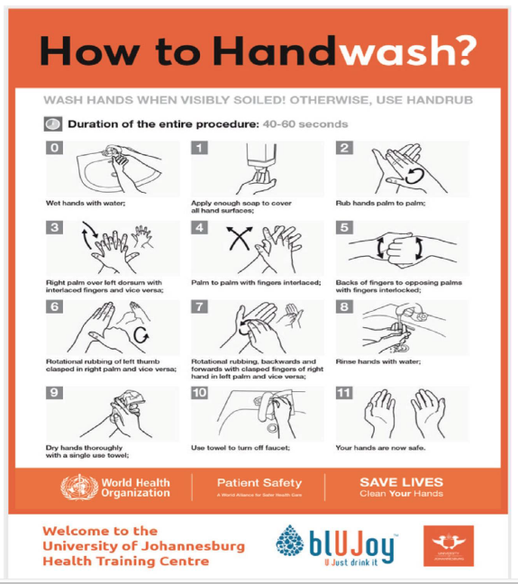
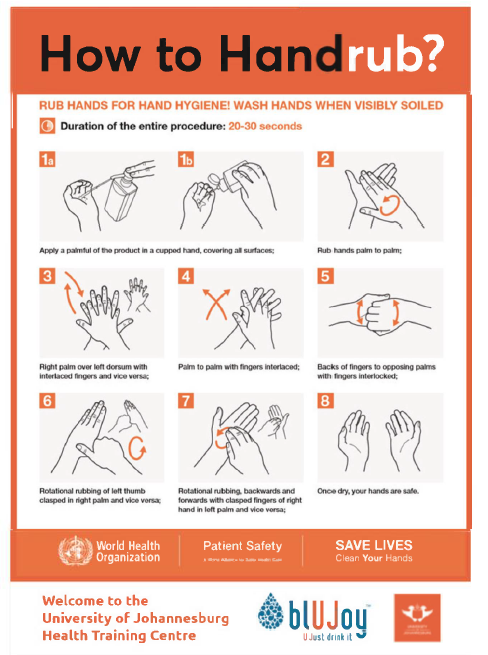

Addendum A
From the desk of the Registrar10 March 2020Dear Practitioners and TherapistsCovid19 or Corona Virus outbreak in South Africa
Printed and electronic media sources are providing information services on reported cases of South Africans infected with the Corona Virus seemingly quicker than official websites such as that of the National Department of Health and the National Institute of Communicable Diseases are being updated. Notwithstanding, the following links are provided for your further use, if needed:- www.health.gov.za- www.nicd.ac.za- www.nicd.ac.za/notifiable-medical-conditions/and the Corona Virus Hotline Contact Number is 0 800 029 999The AHPCSA wishes to draw your attention to the proscription against practitioners or therapists to express themselves in public regarding matters of a health science nature without the permission of the board (1983 Rules), the definition of advertising, also proscribed (2001 Regulations), sections 3 and 5 of the Code of Ethics (AHPCSA Board Notice 178 of 2015) and the rights of any patient, regarded as a consumer according to the Consumer Protection Act (68 of 2008), not to be subject to misleading, fraudulent or deceptive representations of any kind or which may cause consumers unwarranted anxiety. Should the AHPCSA become aware of any practitioner or therapist engaging in any such activity, such practitioner or therapist shall face disciplinary action in terms of sections 22 to 30 of the Allied Health Professions Act (63/1982).Dr Louis MullinderRegistrar: Allied Health Professions Council of South Africa
Addendum B
Allied Health Professions: Practitioners/therapists: Lockdown: Legal position
From the desk of the Registrar24 March 2020Dear Practitioner/TherapistPursuant to President Ramaphosa’s speech yesterday, 24 March 2020, the following excerpt (emphasis added) is relevant:All shops and businesses will be closed, except for pharmacies, laboratories, banks, essential financial and payment services, including the JSE, supermarkets, petrol stations and health care providers.National Health Act (61/2003), section 1 (emphasis added):"health care provider" means a person providing health services in terms ofany law, including in terms of the -Should you so choose, as an AHPCSA-registered practitioner or therapist, you may continue to practice (carry a photo of your registration certificate with you when you travel), as confirmed with the National Department of Health, taking all necessary precautions to protect yourself and your personnel, adhering to public healthcare authority directives and other AHPCSA legislative precepts.Dr Louis MullinderRegistrar: Allied Health Professions Council of South Africa
Addendum C
Extraordinary AHPCSA Policy Decision
 25 March 2020
25 March 2020Extraordinary AHPCSA Policy Decision
Telehealth and telemedicine as a result of South African State of Disaster
The Executive Committee of the Allied Health Professions Council of South Africa ("the AHPCSA Exco"), after due consideration and in light of the South African State of Disaster as a result of the magnitude and severity of the Covid-19 outbreak which has been declared a global pandemic, taking into account sections 1(2)(a), 3, 4, and 9 of the Allied Health Professions Act, Act No 63 of 1982 ("the Act"), read together with Regulation 54(g) of Regulations No R 127 of 12 February 2001 and the Code of Ethics in terms of Section 54(9) of the Regulations No. R. 127 of 12 February 2001 to the Allied Health Professions Act, Act 63 of 1982, as amended ("the Code of Ethics"), has resolved that all practitioners and therapists may practice Telehealth and/or Telemedicine for the period of the South African State of Disaster or as otherwise directed by the AHPCSA or the AHPCSA Exco, subject to the Guidelines as provided by the AHPCSA and the scope of practice of your profession.Any previous Board Notice dealing with Telemedicine is hereby suspended for the duration of the period South Africa is declared a State of Disaster or as otherwise directed by the AHPCSA or the AHPCSA Exco.Should the AHPCSA become aware of any practitioner or therapist who does not comply with the Guidelines and/or practise outside his/her scope of practice, such person shall make himself/herself guilty of unprofessional conduct and face disciplinary action in terms of sections 23 to 30 of the Act.Dr Louis MullinderRegistrar: Allied Health Profession Council of South Africa
Addendum D
Guidelines to the extraordinary AHPCSA policy decision: Telehealth and telemedicine as a result of South African State of Disaster as published at www.ahpcsa.co.za on 25 March 2020
25 March 2020Guidelines: Telehealth and telemedicine as a result of South African State of Disaster
1.The Allied Health Professions Act 63 of 1982 as amended ("the Act"), the Regulations in terms of the Allied Health Professions Act of 1982 as amended ("the Regulations") and the Code of Ethics in terms of Section 54(9) of the Regulations No. R. 127 of 12 February 2001 to the Allied Health Professions Act, Act 63 of 1982, as amended (the Code of Ethics") have reference.2.In order to achieve the objectives of the Act, being inter alia to assist in the promotion and protection of the health of the population of the Republic during the declared State of Disaster by President Cyril Ramaphosa on 15 March 2020 and in order to protect the health of the practitioners and therapists themselves, health care providers which include AHPCSA-registered practitioners and therapists, are informed by the EXTRAORDINARY AHPCSA POLICY DECISION: TELEHEALTH AND TELEMEDICINE AS A RESULT OF THE SOUTH AFRICAN STATE OF DISASTER, published at www.ahpcsa.co.za on 25 March 2020, that they may practice telehealth and/or telemedicine.3.In order to ensure health care services are still being provided during this national period of shutdown and during the Covid-19 pandemic and to achieve the objects of the Act to protect the health of the public and all practitioners and therapists, the following guidelines must be adhered to during the period which practitioners and therapists are entitled to practice telehealth and telemedicine.4.As per the Universal Declaration of Human Rights (as per the World Health Organisation - "WHO") which recognizes "the inherent dignity" and the "equal and unalienable rights of all members of the human family", it is important that when practicing telehealth and telemedicine, the fundamental rights of patients must be respected, namely dignity, privacy, confidentiality and informed consent.5.The practice of telehealth and/or telemedicine may be used for new and current patients of the practitioner or therapist.6.In order to practice telehealth and/or telemedicine, the informed consent of the patient must be obtained prior providing the service. The informed consent must include but is not limited to the following information:6.1The patient must expressly understand and confirm that he/she agrees that the practitioner or therapist may engage via a telehealth consultation.6.2That the patient understands that the consultation will be done via video/internet conferencing technology and that he/she agrees thereto.6.3The purpose of the telehealth consultation is to assess and treat his/her condition, subject to the information provided by the patient.6.4The telehealth consultation is done through a two-way video link-up whereby the practitioner can see the patient's image on the screen and hear his/her voice.6.5The patient is at liberty to ask questions and seek clarification of the procedures and telehealth.6.6The patient may at any time ask that the telehealth consultation be stopped.6.7The patient acknowledges the risks of telehealth consultation in respect of the technology use or assessment made by the practitioner or therapist when vital information regarding the problem is not disclosed by the patient.6.8Any paperwork exchanged will likely be provided through electronic means.6.9During the telehealth and/or telemedicine consultation, details of his/her medical history and personal health information will be discussed through the use of interactive video.6.10The consultation will be recorded.7.Physical requirements for a telehealth and/or telemedicine consultation:7.1Stable internet connection (upload/download not under 3mbps).7.2Computer with webcam and integrated microphone.7.3Quiet and professional area in which to conduct your virtual session.7.4Headphones to ensure privacy.7.5Being professionally dressed.7.6Good quality lighting.8.Only recognized and secure online software may be used in order to protect and guarantee the privacy and confidentiality of a patient.8.1The software must have the ability to record all consultation in order to ensure that all consultations are recorded and added to patient records.8.2The software must be secured from end-to-end in an effort to ensure that all patient information is protected.8.3Full regard must be given to the Protection of Personal Information Act of 2013 in that practitioner and therapist must conduct themselves in a responsible manner when collecting, processing, storing and sharing a patient's personal information.9.During a telehealth and/or telemedicine consultation, the practitioner or therapist must attend to the following:9.1Take a full history of the patient (if not concluded before and being documented on the patient's file).9.2Observe the patient for obvious anomalies.9.3To triage those who are in need of hospital care from those who can be managed via telemedicine.9.4Establish the main/chief complaint.9.5Obtain the history of presenting illness, associated signs and symptoms.9.6Obtain full medical history, if not already on file.9.7Obtain family, personal and social history.9.8Establish medication review.9.9Establish whether the patient has any allergies or intolerances.9.10Obtain a detailed review/explanation of the symptoms of the patient.9.11Observations: e.g. breathing, sputum quality and other as may be relevant.9.12Take the vital signs that are able to be taken. This can be explained to the patient prior to the consultation taking place so as to adequately prepare the patient and further it needs to be explained to the patient (verbally and as per the informed consent to be signed) that the patient accepts full responsibility of the accuracy provided of the vital signs. This can be done in the following ways:9.12.1Temperature taken by the patient himself/herself;9.12.2Pulse rate: This can be described manually to the patient or, if they use such devices, wearable fitness trackers which have been shown to produce reliable and valid data readings, such data may be provided by the patient.9.12.3Respiration rate: Observation by the practitioner during consultation.9.12.4Blood pressure: If the patient has assistance or is able to obtain a blood pressure device, then it can be screened.10.Any advice and/or prescription of medication will be in accordance with the SAHPRA and AHPCSA guidelines.11.Medication can be sent/couriered to the patient or collected with appropriate protocol to prevent cross infection.12.Any suggested treatment regimen is limited to only that which a patient may reasonably understand correctly and to be able to carry out safely.Dr Louis MullinderRegistrar: Allied Health Profession Council of South Africa
Addendum E
From the desk of the Registrar26 March 2020State of Disaster: Covid19 pandemic: AHPCSA Exco directive
Pursuant to a number of enquiries received by the AHPCSA, I am directed to inform you, on behalf of the AHPCSA Exco, that the following AHPCSA Exco directive now applies during the State of Disaster period of lockdown and/or until a further directive issued by the AHPCSA or the AHPCSA Exco:1. Legal aspects of lockdown
The purpose of the Lockdown is to enforce isolation to prevent the spread of the virus further throughout the South African population. While you are allowed to receive patients, should you have chosen to keep your practice open, reception of patients is in essential cases only, namely for emergency cases only. For any other patient queries you must use telehealth/telemedicine according to the Guidelines and Board Notice published on the AHPCSA website on 25 March 2020. In the event that you receive any essential patient, namely as an emergency, you are required to adhere the principles to ensure the safety of your patient by conforming to the safety directives and protocols issued by the Minister of Health, the National and Provincial Departments of Health or any other South African healthcare authority.In summary, therefore, assess the risk-benefit ratio and only see patients in extreme need/emergency at your registered place of practice on a face-to-face basis and use telehealth/telemedicine in all other instances.2. Permit to perform essential service
The above-mentioned permit is issued to you in your individual capacity as a practitioner or therapist for the purposes of performing an essential service. This permit:• does not permit you to conduct your healthcare practice as you would in normal circumstances;• is not transferable to any member of staff for whatever reason and is practitioner/therapist specific and limited;• may not be edited, emended or changed in any way or manner whatsoever and is required to be presented to any law enforcement officer as issued by the AHPCSA, together with a copy of your registration certificate and the appropriate identification document;• is subject at all times to the Laws of South Africa and prescribed regulations and protocols from time to time by government.3. Non-compliance
Any non-compliance with the above directive shall be regarded as unprofessional conduct and may furthermore liable to possible prosecution by National Authorities.Dr Louis MullinderRegistrar: Allied Health Professions Council of South Africa
Addendum F
From the desk of the Registrar26 March 2020Dear Practitioner/TherapistTelehealth/telemedicine and travel permit [regulation 11B(3) of regulations promulgated in terms of the Disaster Management Act, 2002: Amendment of regulation issued in terms of section 27(2)]
Extraordinary AHPCSA policy decision: Telehealth and telemedicine as a result of such the South African State of Disaster and guidelines
The AHPCSA Exco has resolved that all practitioners and therapists may practice telehealth and/or telemedicine for the period of the South African state of disaster or as otherwise directed by the AHPCSA or the AHPCSA Exco subject to the guidelines and the scope of practice for your profession. Visit www.ahpcsa.co.za to view the relevant documentation (AHPCSA website homepage). This modus of consultation is to ensure that healthcare services may still be provided during this national period of lockdown due to the Covid-19 pandemic and to protect both the health of the public and yourselves and to avoid all non-essential contact between yourself and any patient.Travel permit [regulation 11B(3) of regulations promulgated in terms of the Disaster Management Act, 2002: Amendment of regulation issued in terms of section 27(2)]
The necessary documentation is currently being drafted and will be available at a later stage today, 26 March 2020, on the AHPCSA website: www.ahpcsa.co.za and will also be forwarded to all professional associations for onward transmission to members. Should you choose to practice during this lockdown period, and need to travel from your home to your practice, then the document must be downloaded and printed and kept together with a copy of your AHPCSA registration certificate and your identification documentation with identification number as indicated on your AHPCSA registration certificate for presentation to any law enforcement authority if so requested.Covid19 or Corona Virus outbreak in South Africa
Any suspected case of a Covid19 or coronavirus infection must be reported to the relevant public healthcare authorities immediately:- www.health.gov.za- www.nicd.ac.za/- www.nicd.ac.za/notifiable-medical-conditions/and the Corona Virus Hotline Contact Number is 0 800 029 999.The AHPCSA wishes to draw your attention to the proscription against practitioners or therapists to express themselves in public regarding matters of a health science nature without the permission of the board (1983 Rules), the definition of advertising, also proscribed (2001 Regulations), sections 3 and 5 of the Code of Ethics (AHPCSA Board Notice 178 of 2015) and the rights of any patient, regarded as a consumer according to the Consumer Protection Act (68 of 2008), not to be subject to misleading, fraudulent or deceptive representations of any kind or which may cause consumers unwarranted anxiety. Should the AHPCSA become aware of any practitioner or therapist engaging in any such activity, such practitioner or therapist shall face disciplinary action in terms of sections 22 to 30 of the Allied Health Professions Act (63/1982).Dr Louis MullinderRegistrar: Allied Health Professions Council of South Africa
Addendum G
Permit to perform essential service
[Regulation 11B(3) of regulations promulgated in terms of the Disaster Management Act, 2002: Amendment of regulation issued in terms of section 27(2)]
The Allied Health Professions Council of South Africa (AHPCSA) is a statutory health body established in terms of the Allied Health Professions Act, 63 of 1982 (the Act) in order to control all allied or complementary health professions, which includes Aromatherapy, Ayurveda, Chinese Medicine and Acupuncture, Chiropractic, Homeopathy, Naturopathy, Osteopathy, Phytotherapy, Reflexology, Therapeutic Aromatherapy, Therapeutic Massage Therapy, Therapeutic Reflexology and Unani-Tibb.Pursuant to President Ramaphosa’s directive issued on 24 March 2020: All shops and businesses will be closed, except for pharmacies, laboratories, banks, essential financial and payment services, including the JSE, supermarkets, petrol stations and healthcare providers. The National Health Act (62/2003), section 1: "health care provider" means a person providing health services in terms of any law, including in terms of the - Allied Health Professions Act, 1982 (Act 63 of 1982);Any person registered under the AHPCSA may, if he or she so chooses, practice his or her profession and is thus permitted to travel to and from his or her practice, or, only in the case of an emergency to and from the home of any patient.Annexure C
Form 1 (regulation 11B(3))
Permit to perform essential service
| Surname |
As indicated on the AHPCSA registration certificate |
| Full names |
As indicated on the AHPCSA registration certificate |
| Identity number |
As indicated on the AHPCSA registration certificate |
| Contact details |
Cell number |
Telephone number (W) |
Telephone number (H) |
Email address |
| As provided by the AHPCSA-registered healthcare provider |
As provided by the AHPCSA-registered healthcare provider |
As provided by the AHPCSA-registered healthcare provider |
As provided by the AHPCSA-registered healthcare provider |
| Physical address |
As provided by the AHPCSA-registered healthcare provider |
| Surname |
Mullinder |
| Full names |
Louis |
| Identity number |
5502135102085 |
Addendum H
From the desk of the Registrar18 April 2020 (edited 20 April 2020; resending due to non-receipt)Dear practitioner and therapist1. Legal aspects of lockdown
It is to be regretted that cases of non-compliance with AHPCSA decisions and legal directives continue to be reported to the AHPCSA, in particular practising as normal during the lockdown period or that safety directives relating to the use of personal protective equipment are being ignored. In this latter regard visit:www.nicd.ac.za/diseases-a-z-index/covid-19/covid-19-guidelines/on a regular basis to ensure that you remain current with all requisite safety directives and protocols to ensure the safety of your patient and yourself by conforming to these as issued by the Minister of Health, the National and Provincial Departments of Health or any other South African healthcare authority.Allied health practitioners or therapists may only see patients in an emergency at the registered place of practice on a face-to-face basis and are required to use telehealth/telemedicine modus in all other instances until further notice.2. Continuing Professional Development (CPD)
The Chiropractic Association of South Africa (the CASA) has applied for and received approval for some twenty new CPD activities for chiropractors during the lockdown period and is to be recognised and thanked for this initiative, but also for informing me of another CPD activity:"Short course on COVID-19 in SA for Healthcare Professionals"The course has been accredited according to the HPCSA Medical and Dental Board Guidelines for Healthcare Professionals for 10 Clinical CEU's and is recognised in terms of the cross-accreditation rule for 10 CEUs for AHPCSA practitioners and therapists: www.mpconsulting.co.za/products/online-cme/1432/short-course-on-covid-19-in-sa-for-healthcare-professionals?fbclid=IwAR0Uy DSvmFa-P2Sjro9Jc1arYbDPzrHDoO61vRKLoEOpN3EuR2hdKDzZycParticipants are assessed by means of a multiple-choice questionnaire after viewing each video and the learning outcomes are:• Discuss and explain the relationship of the COVID-19 virus within the bigger family of coronaviruses• Relate the dynamics of the early outbreak of COVID-19 infections in China to further spread of the virus throughout the world• Explain the physics of airborne and droplet transmission and the role of infection control in limiting the spread and in containment of infectious diseases• State the phases of a pandemic and list the appropriate responses• Discuss the key activities required in surveillance of and containment of COVID-19 in South Africa• Compare the different types of protective equipment focussing on N95 and surgical masks and their role and relative effectiveness in protection against COVID-19• Demonstrate how to collect nasopharyngeal and oropharyngeal swabs for COVID-19 testing• Differentiate the different treatment modalities for mild, moderate and severe COVID-19 cases• Describe the management of adverse events and identified high risk cases of COVID-19 infections• Describe the indications for mechanical ventilation and explain the potential pitfalls pre-, during and post intubation• Relate COVID-19 to other Influenza and coronavirus infections, compare it with ordinary "flu" and analyse and compare the lessons learnt from SARS and MERSThe course includes the following video topics:Covid 19 What is the novel virus, epidemiology, outbreak in China, infectiousness/attack rate; Dr Terry Marshall Clinical Virologist, AmpathAeriobiology and infection control of contact, droplet nuclei and airborne pathogens; Prof Anton Stoltz Head of Department: Infectious Diseases, Department of Internal Medicine, University of PretoriaSouth African COVID preparedness and response activities; Dr Kerrigan McCarthy, Division of Public Health, Surveillance and Response Unit, NICDAir travel on COVID 19; Dr Lesego Bogatsu Senior Manager, SA Civil Aviation SocietyCoronaviruses and what did we learn from other human coronaviruses including SARS and MERS; Dr Michael Boswell Infectious Disease Specialist, Steve Biko Hospital, University of PretoriaPersonal protective equipment including (N95): Actions and Strategies to stop the spread of COVID-19; Ms Katekani Ngobeni Infection Control Specialist, Senior Researcher, CSIRHow to clinically approach COVID 19 infected patients from mild to severe disease; Prof. Andreas Engelbrecht Head: Emergency Medicine, University of PretoriaMechanical Ventilation in COVID-19; Prof. Andreas Engelbrecht Head: Emergency Medicine, University of Pretoria3. SA Health Products Regulatory Authority: Warning: COVID-19 - caution for the use of health products (previous request to the professional associations to circulate amongst members)
The South African Health Products Regulatory Authority (SAHPRA) has issued a warning as to the risk of sub-standard and falsified health products in relation to the Covid19 pandemic which may be accessed at:www.sahpra.org.za/wp-content/uploads/2020/03/Warning Risk-of-SF-Health-products.doc-30March.pdf (accessed 18 April 2020): The following bears special noting (page 2):Do not buy medicines (including complementary medicines) advertised as cures or preventive treatments for coronavirus, SARS-CoV-2 or COVID-19.No serological tests (also referred to as rapid tests or finger-prick tests) for the diagnosis of COVID-19 have as yet been approved for use in South Africa. The only tests that can be relied upon are molecular tests that are conducted by accredited laboratories in the public and private sectors (Refer to Communication MD003).Any medicine (including complementary medicine), or medical device or IVD advertised for conditions such as COVID-19 without the appropriate authorisation from the SAHPRA may be- i) subjected to immediate call up for registration with the cessation of sale in terms of section 14(2) of the Medicines Act; ii) the subject of a public notice of the status of such product with SAHPRA in terms of section 22B of the Medicines Act; or iii) declared as undesirable in terms of section 23 of the Medicines Act.Any complaints related to complementary medicines may be submitted on the SAHPRA CM website www.sahpracm.org.za. No complementary medicines have been approved for use in high-risk conditions such as COVID-19.Dr Louis MullinderAHPCSA Registrar
Addendum I
Permit to perform essential service
[regulation 11B(3) of regulations promulgated in terms of the Disaster Management Act, 2002: Amendment of regulation issued in terms of section 27(2)]
The Allied Health Professions Council of South Africa (AHPCSA) is a statutory health body established in terms of the Allied Health Professions Act, 63 of 1982 (the Act) in order to control all allied or complementary health professions, which includes Aromatherapy, Ayurveda, Chinese Medicine and Acupuncture, Chiropractic, Homeopathy, Naturopathy, Osteopathy, Phytotherapy, Reflexology, Therapeutic Aromatherapy, Therapeutic Massage Therapy, Therapeutic Reflexology and Unani-Tibb.Pursuant to President Ramaphosa’s directive issued on 24 March 2020: All shops and businesses will be closed, except for pharmacies, laboratories, banks, essential financial and payment services, including the JSE, supermarkets, petrol stations and healthcare providers. The National Health Act (62/2003), section 1: "health care provider" means a person providing health services in terms of any law, including in terms of the - Allied Health Professions Act, 1982 (Act 63 of 1982);Until further notice, any person registered under the AHPCSA may, if he or she so chooses, received patients on a face-to-face basis at the registered place of practice or at the home of any patient but ONLY IN AN EMERGENCY; the telehealth/telemedicine modus of consultation must be used in all other instances/cases.Annexure c
Form 1 (regulation 11B(3))
Permit to perform essential service
| Surname |
As indicated on the AHPCSA registration certificate |
| Full names |
As indicated on the AHPCSA registration certificate |
| Identity number |
As indicated on the AHPCSA registration certificate |
| Contact details |
Cell number |
Telephone number (W) |
Telephone number (H) |
Email address |
| |
As provided by the AHPCSA-registered healthcare provider |
As provided by the AHPCSA-registered healthcare provider |
As provided by the AHPCSA-registered healthcare provider |
As provided by the AHPCSA-registered healthcare provider |
| Physical address |
As provided by the AHPCSA-registered healthcare provider |
| Surname |
Mullinder |
| Full names |
Louis |
| Identity number |
5502135102085 |
Addendum J
From the desk of the Registrar25 April 2020Dear practitioner and therapistCOVID 19 pandemic: AHPCSA update
As you are aware, from 1 May 2020 a risk-adjusted strategy aimed at easing the current lockdown restrictions will be implemented to ensure that the South African government’s response to the pandemic can be as precise and targeted as possible and a national level and separate levels for each province, district and metro in the country, will be applicable. The AHPCSA currently awaits further government directives as to which areas will be classified as lockdown Level 4, but also which areas might remain under lockdown Level 5, before issuing any further practice directives.The AHPCSA will, however, be publishing another extraordinary policy decision, namely: STATE OF DISASTER: GUIDELINES FOR GOOD PRACTICE HYGIENE RELATED TO SARS-COV-2 EPIDEMIC, applicable to all AHPCSA-registered practitioners and therapists during each and every stage of the national lockdown, publication to be effected early next week.Dr Louis MullinderAHPCSA Registrar
Addendum K
Extraordinary AHPCSA Policy Decision
28 April 2020Extraordinary AHPCSA Policy Decision:
State of Disaster: Guidelines for Good Practice Hygiene related to SARS-CoV-2 pandemic
The Executive Committee of the Allied Health Professions Council of South Africa ("the AHPCSA Exco"), after due consideration and in light of the South African State of Disaster as a result of the magnitude and severity of the Covid-19 outbreak which has been declared a global pandemic, taking into account sections 1(2)(a), 3, 4, and 9 of the Allied Health Professions Act, Act No 63 of 1982 ("the Act"), read together with Regulation 54(g) of Regulations No R 127 of 12 February 2001 and the Code of Ethics in terms of Section 54(9) of the Regulations No. R. 127 of 12 February 2001 to the Allied Health Professions Act, Act 63 of 1982, as amended ("the Code of Ethics"), has resolved that all practitioners and therapists shall adhere to the Guidelines for Good Practice Hygiene with immediate effect for the period of the South African State of Disaster or as otherwise directed by the AHPCSA or the AHPCSA Exco.Should the AHPCSA become aware of any practitioner or therapist who does not comply with the Guidelines and/or practises outside his/her scope of practice, such person shall make himself/herself guilty of unprofessional conduct and face disciplinary action in terms of sections 23 to 30 of the Act.Dr Louis MullinderRegistrar: Allied Health Profession Council of South Africa
Addendum L
Guidelines to the Extraordinary AHPCSA Policy Decision: State of Disaster: Guidelines for Good Practice Hygiene related to SARS-CoV-2 epidemic
28 April 2020Guidelines: State of Disaster: Guidelines for Good Practice Hygiene in relation to SARS-CoV-2
1.The Allied Health Professions Act 63 of 1982 as amended ("the Act"), the Regulations in terms of the Allied Health Professions Act of 1982 as amended ("the Regulations") and the Code of Ethics in terms of Section 54(9) of the Regulations No. R. 127 of 12 February 2001 to the Allied Health Professions Act, Act 63 of 1982, as amended (the Code of Ethics") have reference.2.In order to achieve the objectives of the Act, being inter alia to assist in the promotion and protection of the health of the public during the State of Disaster declared by President Cyril Ramaphosa on 15 March 2020, subsequently declared a Level 4 Alert Level by President Ramaphosa on 23 April 2020, but with effect from 1 May 2020, and in order to protect the health of the public, but also that of practitioners and therapists themselves, AHPCSA-registered practitioners and therapists, are required to adhere to the EXTRAORDINARY AHPCSA POLICY DECISION: STATE OF DISASTER: GUIDELINES FOR GOOD PRACTICE HYGIENE IN RELATION TO SARS-COV-2, as published at www.ahpcsa.co.za on 28 April 2020, and as set out herein in detail to ensure that the Universal Declaration of Human Rights (as per the World Health Organisation - "WHO") which recognizes "the inherent dignity" and the "equal and unalienable rights of all members of the human family", the fundamental rights of patients are respected, namely dignity, privacy, confidentiality and informed consent; that any healthcare services being provided during this national period of disaster as a result the Covid-19 pandemic are appropriate to reduce the spread of this disease as far as possible; and to achieve the objects of the Act to protect the health of the public and all practitioners and therapists.3.AHPCSA-registered practitioners are required to adhere to the following guidelines¹ (which remain subject to any existing or future safety directive or protocol which may be issued by the Minister of Health, the National and Provincial Departments of Health or any other appropriate South African healthcare authority or by the National Institute of Communicable Diseases www.nicd.ac.za in the event that they supersede any or all of the below in which case adherence to such safety directives or protocols as may supersede any of all of the below is required) for the period of the South African State of Disaster during which practitioners and therapists are entitled to operate a healthcare establishment, until otherwise directed by the AHPCSA or the AHPCSA Exco.¹ Originally developed and compiled by Dr Christopher Yelverton, University of Johannesburg for and on behalf of the Chiropractic Association of South Africa and as amended for the AHPCSA, with thanks.Guidelines for Good Practice Hygiene
Disclaimer
Any hygiene intervention must be viewed as a barrier to reduce the spread of disease, but may not be 100% effective. Practitioners should always be cognisant of the associated risks to themselves and patients in the current pandemic relating to the nature of our work, and ensure they are up to date with the latest information and directives regarding aspects of controlling the spread of COVID-19, as indicated in paragraph 3 above.1. Background
These guidelines have been developed to assist practitioners with regard to practice hygiene, specifically as a response to the pandemic, and the need to set out how practices should institute mechanisms to prevent the spread of the disease. The first case of the Coronavirus disease 2019 (COVID19) in South Africa was reported on 5 March 2020 and the disease declared a pandemic on 15 March 2020 by the WHO. The virus itself is referred to as SARS-CoV-2 (severe acute respiratory syndrome coronavirus 2) and is extremely infectious, 2.5 times more than influenza. Patients who contract COVID-19 present predominantly with fever, dry cough, malaise and shortness of breath.COVID-19 compared to other common conditions
| Symptom |
COVID-19 |
Common cold |
Flu |
Allergies |
| Fever |
Common |
Rare |
Common |
Sometimes |
| Dry cough |
Common |
Mild |
Common |
Sometimes |
| Shortness of breath |
Common |
No |
No |
Common |
| Headaches |
Sometimes |
Rare |
Common |
Sometimes |
| Aches and pains |
Sometimes |
Common |
Common |
No |
| Sore throat |
Sometimes |
Common |
Common |
No |
| Fatigue |
Sometimes |
Sometimes |
Common |
Sometimes |
| Diarrhea |
Rare |
No |
Sometimes* |
No |
| Runny nose |
Rare |
Common |
Sometimes |
Common |
| Sneezing |
No |
Common |
No |
Common |
2. How SARS-CoV-2 is spread
The virus is spread by droplets during sneezing, coughing or talking, and contact with droplets on surfaces (skin or inanimate objects [fomites]). It enters the body via the mucosal lining of the eyes, nose and mouth. Personal, respiratory and surface hygiene are therefore important to stop the spread:• Personal hygiene - washing hands (with soap and water) and/or disinfection with sanitiser of hands to remove or inactivate the viruses (if) present on the hands and stop the transfer to your eyes, mouth and nose as well as other surfaces. A minimum of 70% ethyl or isopropyl alcohol solution is required for adequate disinfection.• Respiratory hygiene - covering of the mouth and nose when sneezing or coughing either with your elbow, or a tissue or paper towel that must be discarded immediately into a waste bin that can close. Make sure to wash of disinfect your hands after you discard the tissue or paper towel.• Surface hygiene - cleaning and disinfecting general surfaces (with appropriate solutions) that may have been exposed to, or that potentially have virus containing droplets.• Social distancing - ensuring that there is at least a 1.5 metre distance between people in case a person sneezes or coughs expelling any virus containing droplets.3. Hand washing
The correct method of hand washing is an important aspect of controlling the spread of the disease. The following figures demonstrate the correct method of washing your hands and using hand sanitisers. It is important to note that hand sanitisers will not work if the hands are visibly dirty. Practitioners may consider printing these and place them in practices to assist patients in hand washing principles, and are available for viewing at www.who.int/gpsc/5may/resources/posters/en/.4. Personal protection equipment (PPE)
The wearing of personal protective equipment ("PPE") by both practitioner and patient is subject to any requisite safety directive and protocol which may be issued by the Minister of Health, the National and Provincial departments of Health or any other appropriate South African healthcare authority or by the National Institute of Communicable Diseases www.nicd.ac.za and in the event that such safety directives or protocols supersede any or all of the below, adherence to such safety directives or protocols are required at all times:Face masks
It is important to use these correctly, as incorrect use may do more harm than good, and equally important to appreciate that the mask may make you more likely to touch your face, as it may become an irritant, or that breathing and communication will be affected. Additional information is available at:www.who.int/emergencies/diseases/novel-coronavirus-2019/advice-for-public/when-and-how-to-use-masksGuide for using a face mask:• How to put on a face mask:✓ Clean your hands with soap and water or hand sanitiser before touching the mask.✓ Remove a mask from the box and make sure there are no obvious tears or holes in either side of the mask.✓ Determine which side of the mask is the top. The side of the mask that has a stiff bendable edge is the top and is meant to mould to the shape of your nose.✓ Determine which side of the mask is the front. The coloured side of the mask is usually the front and should face away from you, while the white side touches your face.✓ Face Mask with Ear loops: Hold the mask by the ear loops. Place a loop around each ear.✓ Face Mask with Ties: Bring the mask to your nose level and place the ties over the crown of your head and secure with a bow.✓ Face Mask with Bands: Hold the mask in your hand with the nosepiece or top of the mask at fingertips, allowing the headbands to hang freely below hands. Bring the mask to your nose level and pull the top strap over your head so that it rests over the crown of your head. Pull the bottom strap over your head so that it rests at the nape of your neck.✓ Mould the stiff edge to the shape of your nose.✓ If using a face mask with ties: Then take the bottom ties, one in each hand, and secure with a bow at the nape of your neck.✓ Pull the bottom of the mask over your mouth and chin.• How to take the face mask off:✓ Clean your hands with soap and water or hand sanitiser before touching the mask. Avoid touching the front of the mask. The front of the mask is contaminated. Only touch the ear loops/ties/band. Follow the instructions below for the type of mask you are using.✓ Face Mask with Ear loops: Hold both of the ear loops and gently lift and remove the mask.✓ Face Mask with Ties: Untie the bottom bow first then untie the top bow and pull the mask away from you as the ties are loosened.✓ Face Mask with Bands: Lift the bottom strap over your head first then pull the top strap over your head.✓ Throw the mask in a bin with a cover. Clean your hands with soap and water or hand sanitiser.Other PPE
Clinic gowns or scrubs/ disposable aprons: You may consider wearing a clinic jacket or gown to protect underlying clothes to avoid contaminated clothes being taken home.Gloves: These are not advised, unless performing techniques that require barrier protection. Hand hygiene is more important for treatment procedures.Face masks/eye protection: Appears to be mainly for aerosolized treatment approachesOther recommendations: Given the close contact nature of healthcare, distancing is not possible. A level of personal protection and personal protection equipment (PPE) should be considered.Minimum protocol:• No jewellery (watches, rings etc.), these make it difficult to clean effectively and can become carriers for droplets• No sleeves, hand washing should be up to and including the elbows• Face masks (for the doctor and patient) - sufficient evidence now exists, but no gloves - face mask protocols must be adhered to• Clothes worn should be washed after practice (on a wash cycle that has a high temperature with washing powder with proper oxidizing agent, and should be tumble dried or hung in the sun for UV disinfection), and preferably not taken home.5. Risk symptoms and history
It is imperative to ensure the safety of yourself, staff and patients to try ensure no patients with the viral disease access the practice.Important risk symptoms and history are:• Cough, fever (above 38 degrees), sore throat, malaise• Exposure to anyone with suspected or diagnosed with COVID-19 in the last 14 days• Worked or attended a clinic facility treating COVID-19 patients• Travel internationally or domestically in the last 14 daysOther factors relating to patient considerations:Certain groupings have been identified as higher risk relating to the severity of disease, these include:• Over 60 years of age• Pre-existing conditions such as:> asthma> chronic lung conditions> hypertension> autoimmune diseases> organ transplants> cancer> Immunocompromised> Obesity (BMI over 40)> Liver or kidney conditionsIt should be considered whether the increased risk associated with these groups necessitates face-to-face consultation or treatment. Telemedicine consultations should be considered to triage patients in these groups, and face-to-face consultation or treatment be considered only if necessary.6. Patient screening and arrival at practice
Minimum protocols:• Patients should be phoned and screened the day before consultations, and requested to take appropriate action if they are presenting with any risk symptoms or history.• Appropriate signage at the outside entrance to the practice should warn patients of hygiene and screening procedures.• Patients should be stopped from entering the practice without control.• All patients should be sprayed with hand sanitiser and asked to wait outside.• All patients should wear or be given a face mask to reduce droplet spread.• On arrival, patients must be screened for risk factors, and preferably sign they do not have risk symptoms or history.• Consent forms should acknowledge the risks associated with potential exposure to SARS-CoV-2.• Temperature testing/screening of patients before or as they enter the practice.• Appropriate medical and administrative records must be kept that will facilitate tracing should a patient develop symptoms.• A register should be kept of all persons entering the practice on any given day.7. Patient distancing
Social distancing that will be part of everyday living for the foreseeable future as a mechanism to limit the spread of the disease.Minimum protocol:• No patients in the waiting room, and patients requested to wait in their car, and called to the reception when suitable. Ideally patients should have no contact with other patients. If not possible, patient should be staggered in a way that allows for 3 meters between where patients will be sitting. Rooms must remain open with adequate air flow to assist in removal of potential airborne droplets.• Patients should only be accompanied if minors, or require assistance. Family members or friends should be requested to stay in the car.• Sufficient spacing between consultations (15 minutes is recommended) is critical to allow for ventilation and surface hygiene protocols• The patient should not be allowed to touch anything inside the practice and use of the toilets should be carefully monitored with a thorough cleaning of surfaces after every use, including doorknobs and door surfaces.8. Cleaning, disinfection and surface hygiene procedures
• Remove any items in your waiting or consulting rooms that are not required or that patients may come into contact with unnecessarily, such as books, magazines, children’s toys, pens, models etc.• If towels are to be used, these must be changed after every patient consultation and laundered by the practice to ensure adequate cleaning; this is preferable to having a patient bring in their own linen or towels.• If gowns are provided for patients, these may not accumulate in changing rooms, and must be removed for laundering between patients; the practitioner is responsible for cleaning these to ensure that they are adequately cleaned.• Use of disposable linen savers, single use paper towels and other consumables should be used wherever possible.• Practices should have the necessary waste management, including separating medical waste from routine waste, all needle and sharp containers safely mounted or stored and all used and full medical waste bins and sharps containers in a designated and locked area.Minimum protocol:• Surfaces to clean include the entire bed (not only head piece) or examination couch, desks, chairs, door handles.• Any equipment used during the consultation or for treatment should be thoroughly cleaned and/or disinfected as appropriate between each patient, e.g. BP cuffs, diagnostic equipment, wedges/blocks, activators, fascial release equipment etc.• Cleaning solutions with at least 70% ethyl or isopropyl alcohol, or 0.5% sodium hypochlorite are recommended (or approved cleaning detergent): check cleaners on small areas before use, as they can damage surfaces.• Surfaces must be washed at the start and end of the day, and disinfected between each patient.• Floor surfaces and general areas should be cleaned appropriately as often as required using an appropriate cleaning agent.9. Staff in the practice
All staff in the practice must be familiar with screening and hygiene protocols and these should be clearly written up and displayed or readily availableMinimum protocol:• A staff disinfection and hygiene protocol should be implemented.• All staff should have PPE as prescribed, a minimum being a face mask at all times• Consideration must be given to ensure adequate distancing in the workspace and use of/disinfection of shared office equipment, telephone etc.• Staff temperature screening daily, and recorded.• All staff members must engage in rigorous hand hygiene after every patient and ensure reception areas, pens, clipboards, credit card machines, credit cards are cleaned between each patient (ask patients to bring own pen, gown, shorts etc.).• Ensure waiting room chairs, door handles etc. are cleaned between patients.• Cleaning staff: Must have correct training and PPE, as they are a critical link in the process: Those cleaning chairs and surfaces should use gloves, plastic apron, and disposable paper towels.• All mops and cleaning equipment should remain in the detergent.10. If the practice is exposed to a confirmed COVID-19 patient
• Close off areas visited by the ill persons.• Open outside doors and windows and use ventilating fans to increase air circulation in the area.• Wait 24 hours or as long as practical before beginning cleaning and disinfection.• Cleaning staff should clean and disinfect all areas and equipment used by the ill persons, focusing especially on frequently touched surfaces.• If it has been more than 7 days since the person with suspected/confirmed COVID-19 visited or used the facility, additional cleaning and disinfection is not necessary.Hard (Non-porous) Surfaces• If surfaces are dirty, they should be cleaned using a detergent or soap and water prior to disinfection.• For disinfection, most common household disinfectants should be effective. Follow the manufacturer’s instructions.• Diluted household bleach will be effective against coronaviruses when properly diluted. Prepare a bleach solution by mixing 20 ml bleach per litre of water.Soft (Porous) Surfaces• For soft (porous) surfaces such as carpeted floor, rugs, and drapes, remove visible contamination if present and clean with appropriate cleaners indicated for use on these surfaces.• If the items can be laundered, launder items in accordance with the manufacturer’s instructions using the warmest appropriate water setting for the items and then dry items completely. Do not shake laundry before cleaning.Electronics• Remove visible contamination if present. Follow the manufacturer’s instructions. Use of alcohol-based wipes containing at least 70% alcohol to disinfect touch screens. Dry surfaces thoroughly to avoid pooling of liquids.• Cleaners should wear gloves and otherwise follow normal preventive actions while at work and home, including cleaning hands and avoiding touching eyes, nose, or mouth with unwashed hands.Source:www.cdc.gov/coronavirus/2019-ncov/community/organizations/cleaningdisinfection.html11. Compounding and dispensing practices
• At all times practitioners who dispense, or compound and dispense medicines should adhere to Good Dispensing Practice protocols• Hand washing with soap and water or disinfection of hands with hand sanitiser should occur before compounding and/or dispensing activities• Dispensing and /or compounding activities do not require the use of personal protective equipment (PPE)• Maintain social distancing procedures and minimise contact with patients when giving them dispensed medicines.Acknowledgements
• University of Johannesburg, Standard Operating Procedure for Clinics relating to COVID and Hygiene 2020• Prof TG Barnard, Director: Water and Health Research Centre, Faculty of Health Sciences, University of Johannesburg.• Prof Shabir Moosa <profmoosa.com/covid-19-guidelines-for-private-general-practitioners-in-south-africa/>Dr Louis MullinderRegistrar: Allied Health Profession Council of South Africa
Addendum M
29 April 2020From the desk of the RegistrarDear Practitioner/TherapistKindly visit www.ahpcsa.co.za or www.ahpcsa.co.za > Legislation to view:• An extraordinary policy decision regarding GUIDELINES FOR GOOD PRACTICE HYGIENE RELATED TO SARS-COV-2 PANDEMIC, together with the GUIDELINES themselves, both dated 28 April 2020; and• An extraordinary AHPCSA policy decision and directive related to OPERATING DURING THE GOVERNMENT IMPLEMENTED LOCKDOWN under Level 4 or any other lower Alert level, dated 29 April 2020.These policy decisions and directives are applicable for the period of the South African State of Disaster during which practitioners and therapists are entitled to operate a healthcare establishment and adherence to these policies and directives are legally required.Dr Louis MullinderRegistrar
Addendum N
Extraordinary AHPCSA Policy Decision
29 April 2020State of Disaster: COVID19 pandemic: AHPCSA Exco directive
Operating during Government implemented lockdown
Ref no. 2 - 29 April 2020
The Executive Committee of the Allied Health Professions Council of South Africa ("the AHPCSA Exco"), after due consideration, in light of the South African State of Disaster and as a result of the magnitude and severity of the Covid-19 outbreak which has been declared a global pandemic, taking into account sections 1(2)(a), 3, 4, and 9 of the Allied Health Professions Act, Act No 63 of 1982 ("the Act"), read together Regulations No R 127 of 12 February 2001 and the Code of Ethics in terms of Section 54(9) of the Regulations No. R. 127 of 12 February 2001 to the Allied Health Professions Act, Act 63 of 1982, as amended ("the Code of Ethics"), hereby issues the following directive regarding the exercise of any professional function by any AHPCSA-registered practitioners and therapists during lockdown Alert Level 4, or lower, as determined by the South African Government.The AHPCSA Exco directive dated 26 March 2020 (Ref no. 1 - 26 March 2020) has reference and is repealed effective as from 1 May 2020 with the issuance of this Board Notice directive, dated 29 April 2020 in order to achieve the objectives of the Act (being inter alia to assist in the promotion and protection of the health of the public during the State of Disaster declared by President Cyril Ramaphosa on 15 March 2020, subsequently declared a Level 4 Alert Level by President Ramaphosa on 23 April 2020 with effect from 1 May 2020) and the following revised AHPCSA Exco directive shall apply during the State of Disaster period of lockdown or partial lockdown of Level 4 Alert Level or lower and/or until a further directive is issued by the AHPCSA or the AHPCSA Exco:4. Legal aspects of lockdown and amended alert levels
The purpose of the lockdown and/or partial lockdown is to enforce isolation to prevent the spread of the virus further throughout the South African population and to gradually open up businesses, however with the minimum risk of spreading the virus. As per the directive and protocol of the South African Government, Level 4 Alert Level means that some activity may be allowed to resume subject to extreme precautions required to limit community transmission and outbreaks. President Ramaphosa emphasised that during this period (Level 4 Alert Level), the public is encouraged to stay at home, other than for essential personal movement, doing essential work and work in sectors that are under controlled opening.Pursuant to the South African Government Level 4 Alert Level notification, any AHPCSA-registered practitioner or therapist is allowed to receive patients, but only at his/her registered private practice (as per the records of the AHPCSA) as from 1 May 2020 and until further notice from the South African Government and/or the AHPCSA or the AHPCSA Exco.Any visit to a patient's private residence is not permitted, save in emergency circumstances only and only if prescribed personal protective equipment ("PPE") is utilised and worn and there is adherence to an appropriate hygiene protocol. Apart from the appropriate record-keeping on a patient's file in such a case, an additional separate register of visits to any patient's private residence for emergency visits, containing all salient information, shall be kept for all such cases by any practitioner or therapist carrying out such a home visit for emergency purposes and shall made available to the AHPCSA on request.During this Level 4 Alert Level or any lower lockdown level, all AHPCSA-registered practitioners and therapists are required to adhere to and comply with the directives and/or protocols for good practice hygiene as stipulated by the AHPCSA'S Board Notice and Guidelines for Good Practice Hygiene as published on the AHPCSA website on 28 April 2020 (or as subsequently amended), and further, to ensure the safety of any patient, by also conforming with any requisite safety directive and protocol which may be issued by the Minister of Health, the National and Provincial Departments of Health or any other appropriate South African healthcare authority or by the National Institute of Communicable Diseases (www.nicd.ac.za); in the event that such safety directives or protocols supersede any AHPCSA directive and/or protocols, then adherence to such healthcare authority safety directives or protocols is required at all times.AHPCSA-registered practitioners and therapists are, notwithstanding the allowance to re-open practices or healthcare establishments, advised to rather make use of telehealth/telemedicine according to the Guidelines and Board Notice published on the AHPCSA website on 25 March 2020, where at all possible and especially for patients over sixty (60) years of age and other high-risk populations. In all circumstances the practitioner or therapist should perform appropriate triage and a risk-benefit analysis for each patient before deciding on the appropriate course of action.As a result of the gradual upliftment of lockdown and strict directives and protocols issued by the South African Government, all AHPCSA-registered practitioners and therapists will still be required to have their permit, registration certificate and ID with them at all times when performing an essential service.5. Permit to perform essential service
The above-mentioned permit is issued to you in your individual capacity as a practitioner or therapist for the purposes of performing an essential service. This permit:• permits you to conduct your practice only as per the Act, concomitant Regulations, all applicable Board Notices and Guidelines, the Code of Ethics and the AHPCSA'S Board Notice and Guidelines for Good Practice Hygiene as published on the AHPCSA website on 28 April 2020 (or as subsequently amended);• does not permit you to travel to the home of any patient, except for emergency purposes only, and then subject to the keeping of an appropriate register with the entry of all salient details as indicated above, in addition to an appropriate entry on the relevant patient file;• is not transferable to any member of staff for whatever reason and is practitioner / therapist specific and limited;• may not be edited, emended or changed in any way or manner whatsoever and is required to be presented to any law enforcement officer as issued by the AHPCSA, together with a copy of your registration certificate and the appropriate identification document; and• is subject at all times to the Laws of South Africa and prescribed regulations and protocols from time to time by the South African Government and/or decisions or directives of the AHPCSA and/or AHPCSA'S EXCO.6. Non-compliance
Any non-compliance with the above directive shall be regarded as unprofessional conduct and the AHPCSA-registered practitioner or therapist may face disciplinary action in terms of sections 23 to 30 of the Act and may furthermore be liable to possible prosecution by national law-enforcement authorities.Dr Louis MullinderRegistrar: Allied Health Profession Council of South Africa
Addendum O
Permit to perform essential service: State of Disaster: Covid19 pandemic: AHPCSA Exco directive operating during Government implemented lockdown
The Allied Health Professions Council of South Africa (AHPCSA) is a statutory health council established in terms of the Allied Health Professions Act, 63 of 1982 ("the Act") in order to control all allied or complementary health professions, which includes Aromatherapy, Ayurveda, Chinese Medicine and Acupuncture, Chiropractic, Homeopathy, Naturopathy, Osteopathy, Phytotherapy, Reflexology, Therapeutic Aromatherapy, Therapeutic Massage Therapy, Therapeutic Reflexology and Unani-Tibb. Until further notice, any person registered under the AHPCSA may, if he or she so chooses, operate his or her AHPCSA-registered private healthcare practice or travel to the home of any patient but such travel to the home of a patient is in cases of emergency only.Permit to perform essential service
| Surname |
As indicated on the AHPCSA registration certificate |
| Full names |
As indicated on the AHPCSA registration certificate |
| Identity number |
As indicated on the AHPCSA registration certificate |
| Contact details |
Cell number |
Telephone number (W) |
Telephone number (H) |
Email address |
| As provided by the AHPCSA-registered healthcare provider |
As provided by the AHPCSA-registered healthcare provider |
As provided by the AHPCSA-registered healthcare provider |
As provided by the AHPCSA-registered healthcare provider |
| Physical address |
As provided by the AHPCSA-registered healthcare provider |
| Surname |
Mullinder |
| Full names |
Louis |
| Identity number |
5502135102085 |
Addendum P
Extraordinary AHPCSA Policy Decision
22 June 2020Extraordinary AHPCSA Policy Decision: Revised
Telehealth and telemedicine dispensation as a result of South African State of Disaster
The Executive Committee of the Allied Health Professions Council of South Africa ("the AHPCSA Exco"), after due consideration and in light of the South African State of Disaster as a result of the magnitude and severity of the Covid-19 outbreak which has been declared a global pandemic, taking into account sections 1(2)(a), 3, 4, and 9 of the Allied Health Professions Act, Act No 63 of 1982 ("the Act"), read together with Regulation 54(g) of Regulations No R 127 of 12 February 2001 and the Code of Ethics in terms of Section 54(9) of the Regulations No. R.127 of 12 February 2001 to the Allied Health Professions Act, Act 63 of 1982, as amended ("the Code of Ethics"), has resolved that all practitioners and therapists may practice Telehealth and/or Telemedicine for the period of the South African State of Disaster or as otherwise directed by the AHPCSA or the AHPCSA Exco, subject to the revised Guidelines as published at www.ahpcsa.co.za on 22 June 2020 and the scope of practice of your profession.Board Notice 185 of 2011 dealing with Telemedicine remains suspended for the duration of the period South Africa is declared a State of Disaster or as otherwise directed by the AHPCSA or the AHPCSA Exco.Should the AHPCSA become aware of any practitioner or therapist who does not comply with the Guidelines and/or practise outside his/her scope of practice, such person shall make himself/herself guilty of unprofessional conduct and face disciplinary action in terms of sections 23 to 30 of the Act.Dr Louis MullinderRegistrar: Allied Health Profession Council of South Africa
Addendum Q
Guidelines to the Extraordinary AHPCSA Policy Decision: Telehealth and telemedicine as a result of South African State of Disaster as published at www.ahpcsa.co.za on 22 June 2020
22 June 2020Revised guidelines: Telehealth and telemedicine as a result of South African State of Disaster
The Allied Health Professions Act 63 of 1982 as amended ("the Act"), the Regulations in terms of the Allied Health Professions Act of 1982 as amended ("the Regulations") and the Code of Ethics in terms of Section 54(9) of the Regulations No. R.127 of 12 February 2001 to the Allied Health Professions Act, Act 63 of 1982, as amended (the Code of Ethics") have reference.In order to achieve the objectives of the Act, being inter alia to assist in the promotion and protection of the health of the population of the Republic during the declared State of Disaster by President Cyril Ramaphosa on 15 March 2020 and in order to protect the health of the practitioners and therapists themselves, health care providers which include AHPCSA-registered practitioners and therapists are informed that the dispensation that they may practice telehealth and/or telemedicine pursuant to the EXTRAORDINARY AHPCSA POLICY DECISION: TELEHEALTH AND TELEMEDICINE AS A RESULT OF THE SOUTH AFRICAN STATE OF DISASTER, published at www.ahpcsa.co.za on 25 March 2020, has been revised by a subsequent EXTRAORDINARY AHPCSA POLICY DECISION: TELEHEALTH AND TELEMEDICINE AS A RESULT OF THE SOUTH AFRICAN STATE OF DISASTER, published at www.ahpcsa.co.za on 22 June 2020, to provide as follows:4.In order to ensure health care services are still being provided during this national period of shutdown and during the Covid-19 pandemic and to achieve the objects of the Act to protect the health of the public and all practitioners and therapists, the following guidelines must be adhered to during the period which practitioners and therapists are entitled to practice telehealth and telemedicine.5.As per the Universal Declaration of Human Rights (as per the World Health Organisation - "WHO") which recognizes "the inherent dignity" and the "equal and unalienable rights of all members of the human family", it is important that when practicing telehealth and telemedicine, the fundamental rights of patients must be respected, namely dignity, privacy, confidentiality and informed consent.6.The practice of telehealth and/or telemedicine may be used for new and current patients of the practitioner or therapist;7.In order to practice telehealth and/or telemedicine, the informed consent of the patient must be obtained prior providing the service. The informed consent must include but is not limited to the following information:(a)The patient must expressly understand and confirm that he/she agrees that the practitioner or therapist may engage via a telehealth consultation.(b)That the patient understands that the consultation will be conducted via video/internet conferencing technology and that he/she agrees thereto.(c)The purpose of the telehealth consultation is to assess and treat his/her condition, subject to the information provided by the patient.(d)The telehealth consultation is conducted through a two-way video link-up whereby the practitioner can see the patient's image on the screen and hear his/her voice.(e)The patient is at liberty to ask questions and seek clarification of the procedures and telehealth.(f)The patient may at any time ask that the telehealth consultation be stopped.(g)The patient acknowledges the risks of telehealth consultation in respect of the technology use or assessment made by the practitioner or therapist when vital information regarding the problem is not disclosed by the patient.(h)Any paperwork exchanged will likely be provided through electronic means.(i)During the telehealth and/or telemedicine consultation, details of his/her medical history and personal health information will be discussed through the use of interactive video.8.Physical requirements for a telehealth and/or telemedicine consultation:(a)Stable internet connection (upload/download not under 3mbps).(b)Computer with webcam and integrated microphone.(c)Quiet and professional area in which to conduct your virtual session.(d)Headphones to ensure privacy.(e)Being professionally dressed.(f)Good quality lighting.9.Only recognized and secure online software may be used in order to protect and guarantee the privacy and confidentiality of a patient.(a)The software must be secured from end-to-end in an effort to ensure that all patient information is protected.(b)Full regard must be given to the Protection of Personal Information Act of 2013 in that practitioner and therapist must conduct themselves in a responsible manner when collecting, processing, storing and sharing a patient's personal information.10.During or pursuant to a telehealth and/or telemedicine consultation, the practitioner or therapist remains responsible for the treatment, decisions and other recommendations given to the patient and for keeping detailed records of the patient's condition, information transmitted to the patient, as well as received from the patient; the keeping of detailed records of the advice the practitioner or therapist delivers, as well as the information he or she receives and on which the advice is based, is required; and documentation, maintenance and transmission of records relating to telehealth and telemedicine must be maintained at the same standard of care as face-to-face consultations, including, but not limited to attending to the following:(a)Record the date, time, duration and platform/s used for the teleconsultation in the patient's notes.(b)Take a full history of the patient (if not concluded before and being documented on the patient's file).(c)Observe the patient for obvious anomalies.(d)To triage those who are in need of hospital care from those who can be managed via telemedicine.(e)Establish the main / chief complaint.(f)Obtain the history of presenting illness, associated signs and symptoms.(g)Obtain full medical history, if not already on file.(h)Obtain family, personal and social history.(i)Establish medication review.(j)Establish whether the patient has any allergies or intolerances.(k)Obtain a detailed review / explanation of the symptoms of the patient.(l)Observations: e.g. breathing, sputum quality and other as may be relevant.(m)Take the vital signs that are able to be taken. This can be explained to the patient prior to the consultation taking place so as to adequately prepare the patient and further it needs to be explained to the patient (verbally and as per the informed consent to be signed) that the patient accepts full responsibility of the accuracy provided of the vital signs. This can be achieved in the following ways:(i)Temperature taken by the patient himself / herself;(ii)Pulse rate: This can be described manually to the patient or, if they use such devices, wearable fitness trackers which have been shown to produce reliable and valid data readings, such data may be provided by the patient.(iii)Respiration rate: Observation by the practitioner during consultation.(iv)Blood pressure: If the patient has assistance or is able to obtain a blood pressure device, then it can be screened.11.Any advice and/or prescription of medication will be in accordance with the SAHPRA and AHPCSA guidelines.12.Medication can be sent/couriered to the patient or collected with appropriate protocol to prevent cross infection.13.Any suggested treatment regimen is limited to only that which a patient may reasonably understand correctly and to be able to carry out safely.Dr Louis MullinderRegistrar: Allied Health Profession Council of South Africa
Addendum R
From the desk of the Registrar22 June 2020Dear Practitioner and TherapistRevised telehealth and telemedicine guidelines
Kindly visit www.ahpcsa.co.za > Legislation to view the revised guidelines for receiving new or existing patients by telehealth/telemedicine should you so choose; while the reception of new patients by means of telehealth/telemedicine may not necessarily be entirely appropriate for some of the AHPCSA-regulated professions, it is important to allow complementary healthcare of choice via this modus for persons who for various reasons still do not wish to enter the public domain.In essence, the only changes that have been brought about after due consideration by the Exco are that:• The telehealth/telemedicine consultation no longer needs to be recorded and added to the patient records; but that• The date, time, duration and platforms used for the telehealth/telemedicine consultation must be recorded in the patient's notes.In addition, during or pursuant to any such consultation you remain responsible for:• The treatment, decisions and other recommendations given to the patient and for keeping detailed records of the patient's condition, information transmitted to the patient as well as received from the patient;• The keeping of detailed records of the advice you give the patient, as well as the information you receive on which the advice is based; and• Documentation maintenance and transmission of records relating to telehealth/telemedicine must be maintained at the same standard of care as face-to-face consultations.In addition, kindly visit www.nicd.ac.za/diseases-a-z-index/covid-19/covid-19-guidelines for information as to the reporting mechanism for notifiable diseases.With kind regardsDr Louis MullinderAHPCSA Registrar